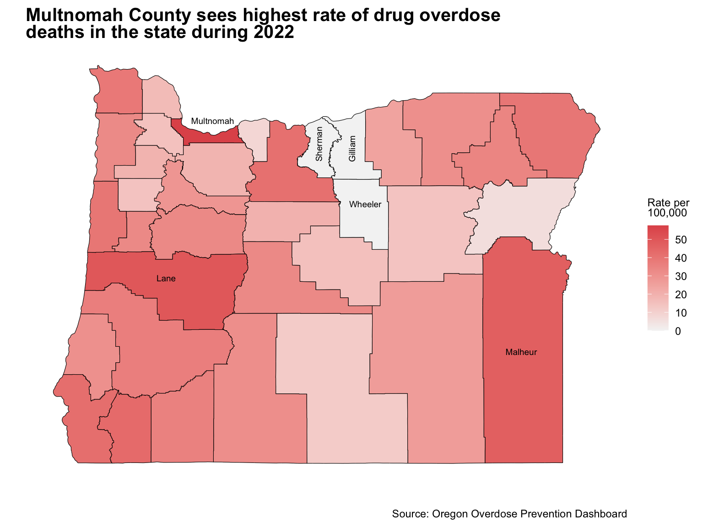

1
Column
Context
The current political nature of the
drug landscape in Oregon has driven the topic of drug overdose to the
front pages of much mass media. My hope in creating this dashboard is to
provide a template for an aesthetically pleasing and accurate
visualization of drug overdose-related mortality in the state. I
developed these visualizations with the layperson in mind, utilizing
specific design choices to improve the ease with which graphics could be
read and interpreted.
All data reported on this dashboard
was accessed from the Oregon Health Authoritys publicly available
Oregon Overdose Prevention Dashboard on January 21st, 2024. While
hospital and emergency department visit data is available through this
source I chose to limit my visualizations to mortality data from the
2009 - 2022 period. The coming pages will describe overdose trends on
both a state and county level in hopes of providing viewers with context
in hopes of informing decisions through factual data and statistics.
I want to give special thanks to my colleagues at the
University of Oregon and Dr.Cengiz Zopluoglu for their feedback,
mentorship and support during this Error and Warning
messages filled process.
Visual 1 Final Version
Column
Visual 2 Final Version
2
Column
Visual 3 Final Version
This Chloropleth Map represent the rate of overdose deaths per 100,000 residents in Oregon for the 2022 reporting period. The color shading of each county represents the county overdose rate in comparison to the legend on the right-hand side. The most darkly shaded counties are those with the highest rate. Multnomah, colored in yellow, has the highest rate of overdose death, at around 55 per 100,000. Counties like Sherman and Gilliam have between 0 and 5 per 100,000.

Column
Visual 3 Rendition 2
Visual 3 Rendition 1
3
Row
Visual 4 Final Version
Row
Visual 4 Rendition 2
Visual 4 Rendition 1
4
Visual 5 Final Rendition
Visualization 5 depicts the statewide
change in drug overdose rates in Oregon from 2009 to 2022. Historically
the trend line was relatively steady at around 15 per 100,000 until 2019
where we see a continual and steep incline.
As the labels
suggest there are two important events to be considered when
interpreting this change over time. First, the Coronavirus (COVID-19)
pandemic spanned from March 11th, 2020 to May 11th, 2023, and
significantly reduced access to mental health, substance use, and harm
reduction services. Secondly, Oregon ballot measure 110 was enacted in
November 2020 which decriminalized most unlawful possession of a
controlled substance.
While by no means can we speculate that
either of these events directly caused the increase in drug overdose
death rates, they do provide important context for the change in drug
overdose trends across time.
Visual 5 Rendition 2
Visual 5 Rendition 1

ggplot(viz1,
aes(x = Time.Period, y = Sum_Rate)) +
geom_line(stat = 'identi5
The creation of these visualizations was a continuous and iterative process. Here lies the grave of the 1st and 2nd renditions of visualizations 1 & 2 and a number of other graphics that did not make the cut.
Column
Visualization 1 Rendition 2
Visualization 1 Rendition 1
Visualization 2 Rendition 2